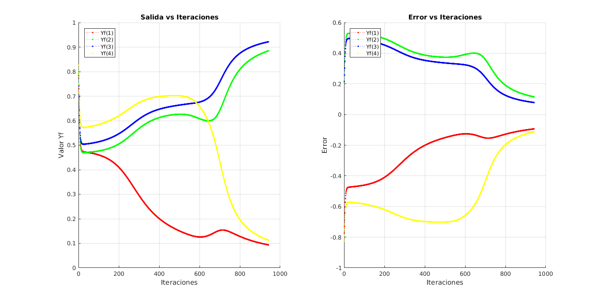
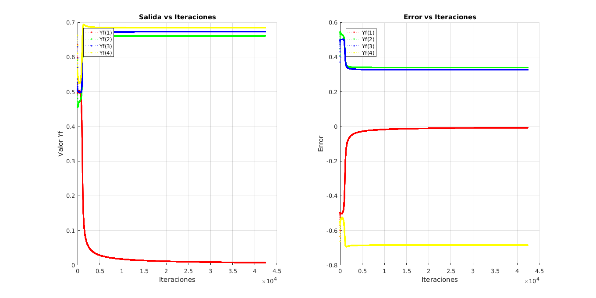
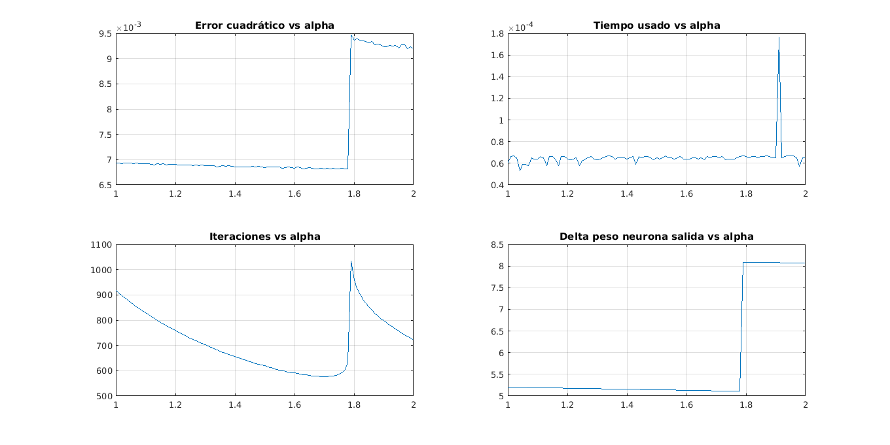
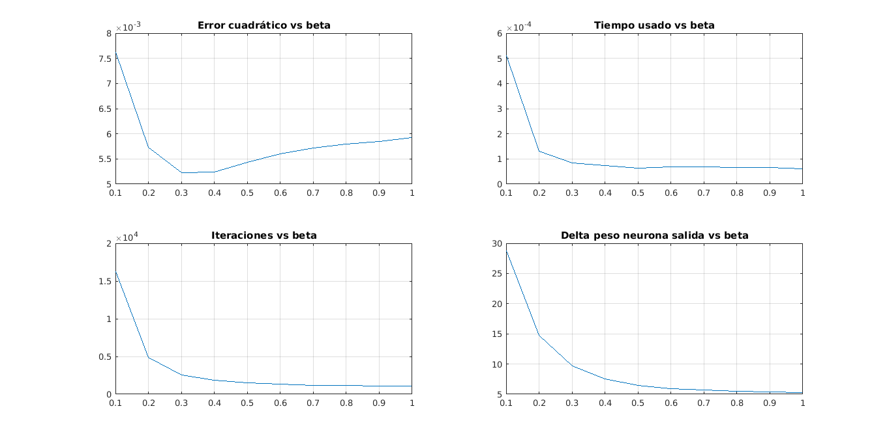

RED NEURONAL BACKPROPAGATION PARA UNA COMPUERTA XOR
El algoritmo Backpropagation es un método de aprendizaje supervisado para redes Feed-Forward multicapa para el campo de Redes Neuronales Artificiales.
Las redes Feed-forward se inspiran en el procesamiento de información de una o más células neuronales, llamadas neuronas. Una neurona acepta señales de entrada a través de sus dendritas, que pasan la señal eléctrica hacia el cuerpo celular. El axón lleva lleva la señal a las sinapsis, que son las conexiones del axón de una célula con las dendritas de otras células.
El principio del enfoque de backpropagation es modelar una función dada modificando las ponderaciones internas de las señales de entrada para producir una señal de salida esperada. El sistema es entrenado usando un método de aprendizaje supervisado, donde el error entre la salida del sistema y una salida esperada conocida se presenta al sistema y se utiliza para modificar su estado interno.
Técnicamente, el algoritmo backpropagation es un método para entrenar los pesos en una red neuronal de avance múltiple. Como tal, requiere que se defina una estructura de red de una o más capas en las que una capa está totalmente conectada a la capa siguiente. Una estructura de red estándar es una capa de entrada, una capa oculta y una capa de salida.
Backpropagation puede usarse para problemas de clasificación y regresión. En los problemas de clasificación, los mejores resultados se consiguen cuando la red tiene una neurona en la capa de salida para cada valor de clase. Por ejemplo, un problema de clasificación de 2 clases o binario con los valores de clase de A y B. Estos resultados esperados tendrían que ser transformados en vectores binarios con una columna para cada valor de clase. Tales como [1, 0] y [0, 1] para A y B, respectivamente. A esto se llama una codificación caliente.
Contents
clear all; close all; clc;
Primero se asignan los pesos
%Wi=[rand rand rand;rand rand rand;rand rand rand];
Wi=[0.133503859661312 0.021555887203497 0.559840705872510;0.300819018069489 0.939409713873458 0.980903636046859;0.286620388894259 0.800820286951535 0.896111351432604];
Wx=Wi;
A continuación se definen las entradas
x1=[0 0 1 1]; x2=[0 1 0 1]; Xi = [x1;x2];
Se definen las salidas
Yi=[0 1 1 0]; A=[Xi(1,1),Xi(2,1),Yi(1); Xi(1,2),Xi(2,2),Yi(2); Xi(1,3),Xi(2,3),Yi(3); Xi(1,4),Xi(2,4),Yi(4)];
Se usará un parámetro llamado tasa de aprendizaje
alpha=0.7;
Además se usa un valor de sesgo, permite cambiar la función de activación a la izquierda o a la derecha, lo que puede ser crítico para el aprendizaje exitoso.
beta=1;
Se va a usar la diferencia (t) entre el valor superior e inferior de la salida, para determinar cuándo es un uno o un cero
t=0.8;
Se definen unas variables de control y de conteo
d=0; %Variable de control para verificar la diferencia entre la salida máxima y la mínima
iteraciones=1;
Yf=zeros(1,4);
error=zeros();
El algoritmo usado es implementado en una función aparte (bp_metodo1). La fórmula usada para calcular la salida es la función sigmoidal, la cual es totalmente derivable, e igualmente será implementada en una función aparte (sigma)
disp('Valores normales'); for j=1:length(Yi) H1 = beta*Wi(1,1) + Xi(1,j)*Wi(1,2) + Xi(2,j)*Wi(1,3); O1=sigma(H1); H2 = beta*Wi(2,1) + Xi(1,j)*Wi(2,2) + Xi(2,j)*Wi(2,3); O2=1/(1+exp(-H2)); H3 = beta*Wi(3,1) + O1*Wi(3,2) + O2*Wi(3,3); Yf(j)=sigma(H3); error(j)=Yi(j) - Yf(j); d3_1= Yf(j) * (1 - Yf(j)) * error(j); d2_1=O1 * (1-O1) * Wi(3,2) * d3_1; d2_2=O2 * (1-O2) * Wi(3,3) * d3_1; for k = 1:3 % Discriminación de los sesgos if k == 1 Wi(1,k) = Wi(1,k) + alpha * beta * d2_1; Wi(2,k) = Wi(2,k) + alpha * beta * d2_2; Wi(3,k) = Wi(3,k) + alpha * beta * d3_1; % Discriminación de las neuronas (k>1) else Wi(1,k) = Wi(1,k) + alpha*Xi(1,j)*d2_1; Wi(2,k) = Wi(2,k) + alpha*Xi(2,j)*d2_2; if (k==2) Wi(3,k) = Wi(3,k) + alpha*O1*d3_1; else Wi(3,k) = Wi(3,k) + alpha*O2*d3_1; end end end end
Valores normales
Se evalúa la suma del error cuadrático medio
ec=sum(error.^2)/2; if d==abs(max(Yf)-min(Yf)) return; else d=abs(max(Yf)-min(Yf)); end res(1,:)=[Yf error ec d];
Se repite el algoritmo hasta que la diferencia sea menor que la establecida previamente Debido a que, para ciertos valores la respuesta o converge, se han creado los siguientes valores para validar la ejecución:
b=0; jj=0; kk=0; rep=100; while d<t iteraciones=iteraciones+1; [Yf,Wi,ex,ec,d,jj,kk,b]=calculateBP(Xi,Wi,Yi,alpha,beta,Yf,d,b,jj,kk); if kk>rep break end res(iteraciones,:)=[Yf ex ec d]; end figure('units','normalized','outerposition',[0 0 1 1]) x=1:1:size(res,1); subplot(121) hold on plot(x,res(:,1),':r.') plot(x,res(:,2),':g.') plot(x,res(:,3),':b.') plot(x,res(:,4),':y.') title('Salida vs Iteraciones') xlabel('Iteraciones') ylabel('Valor Yf') legend('Yf(1)','Yf(2)', 'Yf(3)','Yf(4)','Location','northwest') grid on subplot(122) hold on plot(x,res(:,5),':r.') plot(x,res(:,6),':g.') plot(x,res(:,7),':b.') plot(x,res(:,8),':y.') title('Error vs Iteraciones') xlabel('Iteraciones') ylabel('Error') legend('Yf(1)','Yf(2)', 'Yf(3)','Yf(4)','Location','northwest') grid on
Un ejemplo de valores no convergentes se da cuando los pesos se inicializan así:
%beta=-1 %Wi=[0.052676997680793 0.737858095516997 0.269119426398556;0.422835615008808 0.547870901214845 0.942736984276934;0.417744104316662 0.983052466469856 0.301454948712065]; %beta=0 %Wi=[0.308914593566815 0.726104431664832 0.782872072979123;0.693787614986897 0.009802252263062 0.843213338010510;0.922331997796276 0.770954220673925 0.042659855935049] disp('Valores no convergentes'); Wi=[0.895891573792568 0.099089649681815 0.044165571762661;0.557295155804762 0.772495067187624 0.311940057496269;0.178982479314335 0.338955678247718 0.210145637043552]; rep=100; iteraciones=0; Yf=zeros(1,4); error=zeros(); b=0; jj=0; kk=0; d=0; while d<t iteraciones=iteraciones+1; [Yf,Wi,ex,ec,d,jj,kk,b]=calculateBP(Xi,Wi,Yi,alpha,beta,Yf,d,b,jj,kk); if kk>rep break end res(iteraciones,:)=[Yf ex ec d]; end figure('units','normalized','outerposition',[0 0 1 1]) x=1:1:size(res,1); subplot(121) hold on plot(x,res(:,1),':r.') plot(x,res(:,2),':g.') plot(x,res(:,3),':b.') plot(x,res(:,4),':y.') title('Salida vs Iteraciones') xlabel('Iteraciones') ylabel('Valor Yf') legend('Yf(1)','Yf(2)', 'Yf(3)','Yf(4)','Location','northwest') grid on subplot(122) hold on plot(x,res(:,5),':r.') plot(x,res(:,6),':g.') plot(x,res(:,7),':b.') plot(x,res(:,8),':y.') title('Error vs Iteraciones') xlabel('Iteraciones') ylabel('Error') legend('Yf(1)','Yf(2)', 'Yf(3)','Yf(4)','Location','northwest') grid on
Valores no convergentes
MODIFICACION DE ALPHA
Se modifica la tasa de aprendizaje. Se toman los pesos inicializados anteriormente
disp('Modificacion de alpha'); indice=1; beta=1; for alpha=1:0.01:2 Wi=Wx; iteraciones=0; Yf=zeros(1,4); error=zeros(); b=0; jj=0; kk=0; d=0; res=[]; while d<t tic; iteraciones=iteraciones+1; [Yf,Wf,ex,ec,d,jj,kk,b]=calculateBP(Xi,Wi,Yi,alpha,beta,Yf,d,b,jj,kk); Wi=Wf; if kk>rep break end res(iteraciones,:)=[Yf ex ec d]; tiempo_usado=toc; end Va(indice,1)=[ec]; Va(indice,2)=[tiempo_usado]; Va(indice,3)=[iteraciones]; Va(indice,4)=abs(Wx(9)-Wf(9)); indice=indice+1; end x=1:0.01:2; figure('units','normalized','outerposition',[0 0 1 1]) subplot(2,2,1) y1=Va(:,1); plot(x,y1); grid on title('Error cuadrático vs alpha') subplot(2,2,2) y2=Va(:,2); plot(x,y2); grid on title('Tiempo usado vs alpha') subplot(2,2,3) y3=Va(:,3); plot(x,y3); grid on title('Iteraciones vs alpha') subplot(2,2,4) y4=Va(:,4); plot(x,y4); grid on title('Delta peso neurona salida vs alpha')
Modificacion de alpha
MODIFICACION BETA
disp('Modificacion de beta'); indice=1; alpha=0.5; for beta=0.1:0.1:1 Wi=Wx; iteraciones=0; Yf=zeros(1,4); error=zeros(); b=0; jj=0; kk=0; d=0; Wp=Wi; res=[]; while d<t tic; iteraciones=iteraciones+1; [Yf,Wf,ex,ec,d,jj,kk,b]=calculateBP(Xi,Wi,Yi,alpha,beta,Yf,d,b,jj,kk); Wi=Wf; if kk>rep break end res(iteraciones,:)=[Yf ex ec d]; tiempo_usado=toc; end Ya(indice,1)=[ec]; Ya(indice,2)=[tiempo_usado]; Ya(indice,3)=[iteraciones]; Ya(indice,4)=abs(Wx(9)-Wf(9)); indice=indice+1; end x=0.1:0.1:1; figure('units','normalized','outerposition',[0 0 1 1]) subplot(2,2,1) y1=Ya(:,1); plot(x,y1); grid on title('Error cuadrático vs beta') subplot(2,2,2) y2=Ya(:,2); plot(x,y2); grid on title('Tiempo usado vs beta') subplot(2,2,3) y3=Ya(:,3); plot(x,y3); grid on title('Iteraciones vs beta') subplot(2,2,4) y4=Ya(:,4); plot(x,y4); grid on title('Delta peso neurona salida vs beta')
Modificacion de beta
CONCLUSIONES
- En términos generales, se debe establecer un criterio para asignar la diferencia entre las salidas, el número de pasos, la tasa de aprendizaje y la polarización, acorde a las necesidades para tener el resultado deseado
- Para el valor seleccionado de alpha (0,5) los mejores valores de beta se encuentran entre 0.3 y 0.4
- Para el valor seleccionado de beta (1) los mejores valores de alpha se encuentran entre 0.3 y 0.4